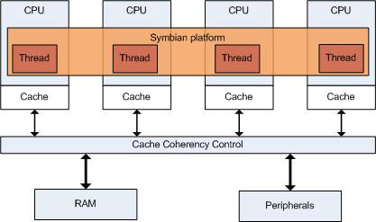

SMP
Provides summary of documents to make SMP-safe applications.
Getting started
with SMP
The SMP introduction topics provide the basic concepts
of threads, interrupt handling, locks and memory barriers in an SMP environment.
The common error pattern topics describes the solutions to the problems
that occur when porting an application from single core architecture to multiple
core architecture.
Architecture
The
following illustration is an example of multiprocessor architecture with four
CPUs connected to a shared memory.
Figure 1. SMP architecture example

Technologies
SMP
is a microprocessor architecture with two or more processors. The processors
are connected to a single shared memory. A single instance of Symbian platform
runs on the available cores and allocates the threads to different CPUs.
- SMP Concepts
Symmetric Multiprocessing (SMP) applies to a multiprocessor computer architecture where 2 or more identical processes can connect to a single shared main memory. SMP allows simultaneous execution of threads. This means that overall performance is improved and ultimately battery life is extended. This section introduces the main concepts applied to SMP including Threading Models, Interrupt Handling, Locking and Memory Barriers.
- Obsolete Mechanisms
This is an collection of documents that describe mechanisms that have been rendered obsolete by the introduction of SMP.
- SMP Tools Overview
Describes the tools that are available for debugging on an SMP platform.
- SMP Developer Tips
This section describes how SMP works and provides you with information on how to troubleshoot some problems you may have. This includes problems with driver closure ordering and how memory is shared between threads in a process
Copyright ©2010 Nokia Corporation and/or its subsidiary(-ies).
All rights
reserved. Unless otherwise stated, these materials are provided under the terms of the Eclipse Public License
v1.0.